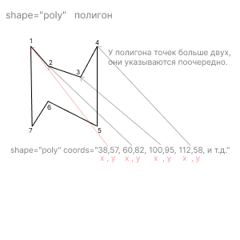
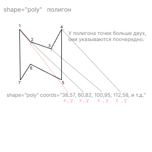
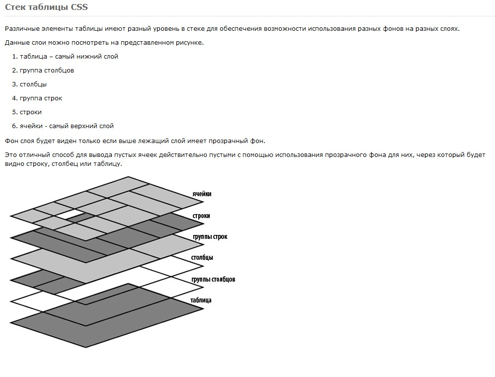
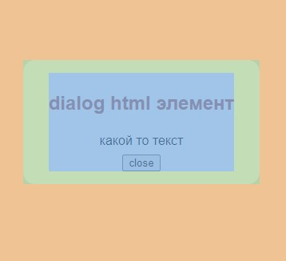

Из соображений доступности не рекомендуется менять порядок навигации по полям ввода по умолчанию
html
ссылки, якоря
<a href="../../#link"> откуда </a>
<a name="link"> куда </a>
a { ... }
a:link { ... }
a:visited { ... }
a:focus { ... }
a:hover { ... }
a:active { кнопка мыши зажата на ссылке }
Зона кликабельности ссылки
div {
position: relative;
}
a:before {
content: '';
position: absolute;
top: 0;
bottom: 0;
left: 0;
right: 0;
}
ссылка на файл
при переходе по ссылке на файл браузер предложит его скачать.
Однако, если браузер умеет обрабатывать файлы этого типа, то содержимое файла откроется прямо в браузере. Чаще всего так происходит с изображениями.
предотвратить открытие файлов прямо в браузере:
<a href="file.pdf" download>Браузер скачает меня, а не будет читать</a>
rel="noopener" // атрибут позволяет игнорировать скрипты сторонней страницы
При скачивании или загрузке файлов со сторонних сайтов для безопасности можно использовать атрибут rel="noopener". Этот атрибут позволяет игнорировать скрипты сторонней страницы, которые могут влиять на загрузку файла. Особенно актуален этот атрибут в случае, если загрузка происходит в новой вкладке или новом окне.
fonts
font: font-style, font-variant, font-weight, font-size/line-height, font-family;
@font-face {
font-family: 'Roboto Condensed';
src: url("../fonts/RobotoCondensed-Light.ttf");
font-style: normal;
font-weight: 300;
font-display: swap;
}
списки
unordered list -- неупорядоченный список
в ul могут находиться только теги li -- «list item»
Пунктов должно быть не менее одного.
ordered list -- упорядоченный список
У ol может быть несколько атрибутов: start, reversed и type.
По умолчанию нумерация пунктов начинается с единицы, а с помощью start можно поменять это стартовое число. Нумерация пунктов списка может также быть отрицательной.
start -- меняет стартовое число нумерации, может быть отрицательным.
reversed -- меняет направление нумерации на противоположный, не требует значения
type -- можно задавать различные типы маркеров
- 1: десятичное число
- a: буквы латинского алфавита в нижнем регистре
- A: буквы латинского алфавита в верхнем регистре
- i: римские цифры в нижнем регистре
- I: римские цифры в верхнем регистре
description list -- список описаний
может содержать более одного описания для каждого термина.
<dl> «description list» сам список описаний;
<dt> «description term» термин;
<dd> «description definition» описание или определение.
input
custom input
input снаружи label
<input class=“custom-checkbox reset” type="checkbox" id="checkbox-1”>
<label for=" checkbox-1"></label>
Скрываем инпут добавлением класса
Создаем чекбокс
.custom-checkbox + label::before {
content: "";
display: inline-block;
width: 1em;
height: 1em;
border: 1px solid red;
border-radius: .25em;
margin-right: .5em;
vertical-align: middle;
background-repeat: no-repeat;
background-position: 50% 50%;
background-size: 50% 50%;
}
checked:
.custom-checkbox:checked + label::before {
border-color: #0b76ef;
background-color: #0b76ef;
background-image: url("");
}
при наведении курсора на checkbox
.custom-checkbox:not(:disabled):not(:checked)+label:hover::before {
border-color: #b3d7ff;
}
для активного состояния чекбокса (при нажатии на него)
.custom-checkbox:not(:disabled):active+label::before {
background-color: #b3d7ff;
border-color: #b3d7ff;
}
для чекбокса, находящегося в фокусе
.custom-checkbox:focus+label::before {
box-shadow: 0 0 0 0.2rem rgba(0, 123, 255, 0.25);
}
для чекбокса, находящегося в фокусе и не находящегося в состоянии checked
.custom-checkbox:focus:not(:checked)+label::before {
border-color: #80bdff;
}
для чекбокса, находящегося в состоянии disabled
.custom-checkbox:disabled+label::before {
background-color: #e9ecef;
}
input вложен в label
<label class="custom-radio">
<input class=“reset” type="radio" name="color" value="indigo">
<input class=“reset” type="radio" name="color" value="red">
<span>без спана не обойтись в этом случае</span>
</label>
Скрываем инпут добавлением класса
для элемента label связанного с .custom-radio
.custom-radio > span {
display: inline-block;
vertical-align: middle;
margin-right: .5em;
}
создание в label псевдоэлемента before
.custom-radio > span::before {
content: '';
display: inline-block;
width: 1em;
height: 1em;
border: 1px solid #adb5bd;
border-radius: 50%;
vertical-align: middle;
margin-right: 0.5em;
background-repeat: no-repeat;
background-position: center center;
background-size: 50% 50%;
}
при наведении курсора на радио
.custom-radio > input:not(:disabled):not(:checked)+span:hover::before {
border-color: #b3d7ff;
}
для активной радиокнопки (при нажатии на неё)
.custom-radio > input:not(:disabled):active+span::before {
background-color: #b3d7ff;
border-color: #b3d7ff;
}
для радиокнопки, находящейся в фокусе
.custom-radio > input:focus+span::before {
box-shadow: 0 0 0 0.2rem rgba(0, 123, 255, 0.25);
}
для радиокнопки, находящейся в фокусе и не находящейся в состоянии checked
.custom-radio > input:focus:not(:checked) + span::before {
border-color: #80bdff;
}
для радиокнопки, находящейся в состоянии checked
.custom-radio > input:checked + span::before {
border-color: #0b76ef;
background-color: #0b76ef;
background-image: url("http://");
}
для радиокнопки, находящейся в состоянии disabled
.custom-radio > input:disabled + span::before {
background-color: #e9ecef;
}
custom checkbox
<form class="check">
<input type="checkbox" class="check__input" id="agreement">
<label class="check__label" for="agreement"> I'm agree</label>
</form>
.check__input {
position: absolute;
left: -999%;
width: 1px;
height: 1px;
clip: rect(0 0 0 0);
opacity: 0;
z-index: -1;
}
.check__label {
vertical-align: middle;
}
.check__label::before {
content: '';
display: inline-block;
width: 1.2em;
height: 1.2em;
padding-bottom: 0.05em;
font-size: 0.7em;
border: 1px solid #000;
border-radius: 0.2em;
vertical-align: middle;
margin-right: 0.35em;
text-align: center;
position: relative;
top: -0.2em;
}
.check__input:checked + .check__label::before {
content: '\2714';
}
input type range -- reset
input type range reset
<input class="range" type="range" min="0" max="100" value="25" >
.range {
appearance: none;
-webkit-appearance: none;
outline: none;
}
.range::-webkit-slider-thumb { ползунок
-webkit-appearance: none;
cursor: pointer;
}
.range::-moz-range-thumb { ползунок
-moz-appearance: none;
cursor: pointer;
}
.range::-moz-range-track { полоса
appearance: none;
outline: none;
}
.range::-webkit-slider-thumb:hover,
.range::-webkit-slider-thumb:active {
увеличить размер при наведении и перетаскивании
или цвет поменять(ну крч выделить активный ползунок)
}
.range::-moz-range-thumb:hover,
.range::-moz-range-thumb:active{
width: 20px;
height: 20px;
}
select
Вложенность групп не ограничена, внутрь каждой группы можно вложить другие группы.
Аналогично можно группировать элементы и в списках со множественным выбором
<select name="variants">
<optgroup label="Группа вариантов 1">
<option value="1">Вариант 1</option>
<option value="2">Вариант 2</option>
<option value="3">Вариант 3</option>
</optgroup>
<optgroup label="Группа вариантов 2">
<option value="4">Вариант 4</option>
<option value="5">Вариант 5</option>
<option value="6">Вариант 6</option>
</optgroup>
</select>
Запрет редактирования полей
readonly не дает пользователю изменять поле (вводить новый текст, модифицировать
существующий).
Введенное
значение можно выделить и скопировать. Данные из этого поля отправляются на сервер.
disabled не дает пользователю изменять поле (вводить новый текст, модифицировать
существующий).
Нельзя поставить
фокус в это поле, введенное значение нельзя выделять и копировать. Данные из этого поля НЕ
отправляются
на
сервер.
<input type="text" readonly>
<input type="text" disabled>
autocomplete
При вводе первых букв текста выводится список сохранённых ранее значений
Параметрами автозаполнения можно управлять используя атрибут autocomplete.
Он может принимать два значения on и off
Отключение автозаполнения обычно используется из соображений безопасности, например, чтобы не сохранялись пароли, номера банковских карт и так далее.
<input type="text" autocomplete="off">
tabindex
<input type="text" tabindex="3">
В качестве значения может использоваться любое целое положительное число. Значения выстраиваются последовательно и переход между элементами происходит от меньшего значения к большему.
Если представлено отрицательное значение — элемент может быть выделен, однако не участвует в последовательной навигации
Если представлен 0 — элемент может быть выделен и достигнут с помощью последовательной навигации, однако порядок навигации определён платформой
цитаты
q -- встроенная цитата
q -- встроенная цитата
<q cite="https://www.w3.org/TR/html52/">...</q>.
cite — «расширенная версия» атрибута cite. В нём можно указывать помимо адреса источника цитаты ещё и название произведения, откуда цитируется текст, а также имя автора или организации, чей текст цитируется.
<p>По словам <cite>Чарльза Буковски</cite> — <q>Интеллектуал о простой вещи говорит сложно —
художник сложную вещь описывает простыми словами.</q></p>
Тег <cite> может быть самостоятельным и не привязываться к цитате:
<p>Какой доктор ваш любимый (в сериале <cite>Доктор Кто</cite>)?</p>
blockquote -- отдельная цитата
Для выделения длинных цитат, которые могут состоять из нескольких абзацев
может быть атрибут cite, содержащий ссылку на источник цитаты
также в паре с blockquote можно использовать тег cite
<blockquote>
<p>Ум ценится дорого, когда дешевеет сила.</p>
<cite>Джейсон Стэтхэм</cite>
</blockquote>
image
адаптивное изображение
дескриптор плотности и ширины
loading
Браузер не будет загружать ленивые изображения до тех пор, пока пользователь не прокрутит страницу вниз настолько, что изображение вот-вот появится в поле зрения. Если пользователь никогда не прокручивает, изображение никогда не загружается.
<img loading="lazy">
loading="lazy" не следует указывать тем изображениям которые при загрузке страницы уже
попадают в поле зрения.
Если ваш сайт автоматически применяет loading="lazy"атрибут, вы часто можете установить eagerатрибут
(который
используется по умолчанию), чтобы предотвратить его применение:
<img loading="eager">
приоритет загрузки
<img fetchpriority="high">
Это сообщит браузеру о том, что нужно сразу же получить изображение и с высоким приоритетом, а не ждать, пока браузер завершит макет, когда изображения обычно загружаются.
Но помните: когда вы просите браузер установить приоритет загрузки одного ресурса, например изображения, браузеру придется отменить приоритет загрузки другого ресурса, такого как сценарий или файл шрифта. Устанавливайте изображение только в fetchpriority="high"том случае, если оно действительно жизненно необходимо
Надпись на кнопке можно задать с помощью атрибута value. Для кнопки отправки формы задавать имя необязательно. Но если имя задано, то на сервер будут отправляться имя и значение кнопки.
Обычно имя для кнопки отправки задают, когда в форме несколько кнопок, отвечающих за разные действия. Браузер отправляет на сервер имя и значение только той из них, на которую нажал пользователь. Таким образом, сервер может понять, какую кнопку нажали и что нужно сделать.
В браузере Safari картинки могут слегка деформироваться даже после добавления им максимальной ширины и автоматической высоты. Проблему можно решить, обернув картинку в любой подходящий тег, например <figure> или <div>.
Картинка в параграфе
картинку можно запихать в параграф
выбор расширения img
если img имеют декоративный характер
Если вдруг они пропадут, информация не потеряется, и пользователь всё равно сможет понять в какой раздел ему нужно. Для реализации лучше всего использовать background-image для псевдоэлемента.
При сохранении изображения в формат JPEG можно задавать уровень качества. Если установить уровень качества слишком низким, то появятся артефакты.
JPEG не поддерживает прозрачность, поэтому изображение в формате JPEG — это всегда прямоугольник.
Используйте JPEG для размещения фото с наилучшим соотношением «размер файла»/«качество».
Формат PNG включает в себя два подтипа: PNG-8 и PNG-24. Они также являются режимами сохранения в Photoshop.
На самом деле, формат PNG один. А PNG-8 и PNG-24 это его подтипы, а также режимы сохранения в Photoshop.
PNG-8, как и GIF, поддерживает прозрачность. Это означает, что пиксель либо полностью прозрачный, либо полностью непрозрачный.
Чем PNG лучше GIF? PNG более современный и свободный формат, а GIF более старый и проприетарный (за его использование могут потребовать деньги). Уровень сжатия, качество и другие характеристики примерно одинаковые, поэтому лучше всегда использовать PNG.
PNG-8 по характеристикам схож с форматом GIF. Он хорошо подходит для схем, чертежей, графиков и текста, а также изображений, где мало цветов. Максимальное количество цветов — 256. Данный формат позволяет использовать прозрачность.
PNG-24 подходит для схем, чертежей, графиков, текста, а также для сложных многоцветных изображений, так как поддерживает практически неограниченное количество цветов. На фотографиях обычно он уступает JPEG по размеру файла, но превосходит по качеству изображения. Данный формат имеет полноценную поддержку полупрозрачности, которой нет ни в одном другом формате.
PNG-24 — отличнейший формат. Он хорошо подходит и для схем-чертежей-графиков-текста, и для сложных многоцветных изображений, так как поддерживает практически неограниченное количество цветов.
На фотографиях обычно он уступает JPEG по размеру файла, но превосходит по качеству изображения. Но иногда разница по размеру файла настолько некритична, что можно использовать PNG.
Самый главный плюс PNG-24 — это полноценная поддержка полупрозрачности, которой нет ни в одном другом формате. Поэтому в веб-разработке при вёрстке сложных фонов, графических элементов со сложными тенями и так далее альтернативы PNG-24 просто нет.
Давным-давно в IE была проблема с поддержкой полупрозрачных PNG, но в более поздних версиях IE (8+), таких проблем нет.
gif
Наверное, единственная причина использовать GIF заключается в том, что он поддерживает анимированные изображения.
Во всех остальных случаях используйте PNG или JPEG (если речь идёт о фотографиях и PNG даёт слишком тяжёлый файл).
picture

‹picture"›
‹source srcset="../img/1.png 1x, ../img/2.png 2x" media="(max-width: 320px)"›
‹source srcset="../img/3.png 1x, ../img/4.png 2x" media="(max-width: 500px)"›
‹source srcset="../img/5.png 1x, ../img/6.png 2x" media="(max-width: 700px)"›
‹img src="../img/7.png" srcset="../img/8.png 2x" alt=""›
img отобразится если ни один вариант выше не подойдет(например в IE).
‹/picture›
2x для ретины(такая же картинка только плотность пикселей больше)
image and srcset
надо
сделать
map image
usemap это имя карты изображения, шарп (#) обязателен.
coords="координаты в пикселях"
x от левого края картинки до точки
y от верха картинки до точки
shape="rect / circle / poly / default"
shape - область
rect - прямоугольная область
circle - круглая область
poly - многоугольная(полигон)
default - вся область(по дефолту)
‹img class="" src="" alt="" usemap="#имя карты изображения, шарп обязателен"›
‹map› name="имя карты изобpажения"›
coords="x, y, x, y"
‹area shape="rect" coords="58, 37, 167, 175" href="" target="blank" alt=""› rect - прямоугольная область
coords=" x, y, ширина "
‹area shape="circle" coords="250, 115, 60" href="https://" target="blank" alt=""› circle - круглая область
poly - многоугольная(полигон)
‹area shape="poly" coords="70,70, 168,70, 180,112, 280,112, 280,198, 180,198, 168,210, 70,210" href="https://"
target="blank" alt=""›
‹/map›

 

интерактивная карта
Под интерактивную карту принято добавлять изображение с картой, на случай если интерактивная карта не загрузилась. Каким же образом её добавлять? Карта несёт информацию об адресе. В блоке «Контакты» только по карте можно понять адрес компании, ведь в тексте адрес не продублирован, а значит если изображение потеряется, пользователь потеряет информацию о местонахождении компании. Таким образом, изображения карт относятся к контентным изображениям.
Реализация: <img> (атрибут alt должен описывать изображение, если на карте адрес — Карта офиса по адресу улица Строителей, 15)
figure и figcaption
<figure> хорош для любого иллюстративного или демонстрационного материала, которым можно дополнить содержание документа. Таким материалом могут быть схемы, графики, примеры кода, таблицы и так далее.
<figure>
Схема, график, диаграмма или код
<figcaption>Подпись к содержимому</figcaption>
</figure>
video
В HTML с самого начала было очень просто вставлять изображения, но очень сложно видео и аудио. Сейчас эта проблема решена.
width
и
height
|
задают ширину и высоту видео |
controls |
пустой атрибут, при наличии которого отображается панель управления видео |
preload |
задаёт режим предзагрузки видео, имеет 3 возможных значения:
|
src |
задаёт адрес видеофайла |
autoplay |
пустой атрибут, при наличии которого воспроизведение видео начинается автоматически |
poster |
задаёт адрес картинки-обложки, которая отображается, когда видео ещё не загрузилось или не воспроизводится |
Cуществует несколько форматов видео, каждый из которых хорошо поддерживается лишь некоторыми браузерами. Вот три самых распространённых формата и их поддержка:
- MPEG-4/H.264
- OGG/Theora
- WebM
Поэтому мы должны в видео указывать адреса файлов во всех этих форматах (и конвертировать исходное видео в эти форматы, конечно). Делается это с помощью тегов <source>:
<video controls preload="metadata" width="400" height="225">
<source src="video.mp4" type="video/mp4">
<source src="video.ogv" type="video/ogg">
<source src="video.webm" type="video/webm">
</video>
В атрибуте src указывается адрес видеофайла, а в атрибуте type его тип (также там могут указываться и кодеки)
Атрибут type не является обязательным, так как браузер умеет сам определять тип и кодеки, но указывая тип явно, мы помогаем ему не ошибиться.
обложки к видео youtube
ютуб хранит обложки к видео по адресу:
i.ytimg.com/vi/ id видео/ разрешение обложки
i.ytimg.com/vi_webp/ id видео/ разрешение обложки.webp
https://i.ytimg.com/vi/ZwtLqMiQwcA/maxresdefault.jpg
https://i.ytimg.com/vi_webp/ZwtLqMiQwcA/maxresdefault.webp
качество миниатюры(обложки видео):
maxresdefault.jpg - максимальное
hqdefault.jpg - высокое
mqdefault.jpg - среднее
sddefault.jpg - стандартное
audio
Работа с аудио в HTML очень похожа на работу с видео, только у тега для аудио чуть меньше параметров.
controls |
пустой атрибут, при наличии которого отображается панель управления проигрывателем |
preload |
задаёт режим предзагрузки аудио, имеет 3 возможных значения:
|
src |
задаёт адрес аудиофайла |
autoplay |
пустой атрибут, при наличии которого воспроизведение звука начинается автоматически |
Для охвата большинства современных браузеров, достаточно использовать всего два формата:
- MP3
- OGG
И снова мы не можем указать только один файл в атрибуте src у тега <audio>. Мы должны так же, как и в случае с видео, перечислить адреса звуковых файлов в разных форматах с помощью тегов <source>:
<audio controls>
<source src="sound.mp3" type="audio/mpeg">
<source src="sound.oga" type="audio/ogg">
</audio>
Теги <source> в аудио работают так же, как и в видео
table

Аналог группировки верхних рядов в CSS — свойство display: table-header-group. Отметим, что блок, которому задано это свойство, всегда отображается вверху CSS-таблицы, даже если в разметке он идёт не первым. Это поведение идентично тегу <thead>.
display: table-footer-group, всегда отображается снизу CSS-таблицы, даже если в разметке он идёт не последним. Это поведение идентично тегу <tfoot>.
Ряды содержания таблицы в HTML включаются в тег <tbody>. В CSS же эту задачу выполняет свойство display: table-row-group.
В HTML-таблицах для стилизации столбцов используется тег <col>. Тег пишется в начале таблицы и не закрывается. Первый &l;col> в разметке влияет на каждую первую ячейку в рядах таблицы, то есть, на первый столбец. Следующий <col> будет стилизовать второй столбец и так далее.
<table>
<col width="20%">
<col width="80%">
<tr>
<td>1.1</td>
<td>2.1</td>
</tr>
<tr>
<td>1.2</td>
<td>2.2</td>
</tr>
</table>
В CSS-таблицах всё так же: внутри таблицы нужно создать пустой тег и задать ему свойство display: table-column — это аналог тега <col>. Правила для него будут применяться к первому столбцу, следующий элемент с table-column стилизует второй столбец и так далее.
display: table;
table { display: table }
tr { display: table-row }
thead { display: table-header-group }
tbody { display: table-row-group }
tfoot { display: table-footer-group }
col { display: table-column }
colgroup { display: table-column-group }
td, th { display: table-cell }
caption { display: table-caption }
{ caption-side: top }
{ caption-side: bottom }

Отображение и скрытие пустых ячеек таблицы
Свойство empty-cellsCSS определяет, будут ли отображаться границы и фон вокруг <table>ячеек, не имеющих видимого содержимого.
empty-cells: show;
empty-cells: hide;
caption
Тег <caption> должен размещаться внутри тега <table>, причём непосредственно внутри него и первым, до остальных вложенных тегов.
По вертикали заголовок таблицы перемещается CSS-свойством caption-side со значениями top и bottom
По горизонтали заголовок таблицы выравнивается свойством text-align со значениями left, right и center
colspan
объединения ячеек по горизонтали
Когда вы задаёте ячейке атрибут colspan со значением 2, то ячейка как бы «растягивается» на ячейку справа, но та ячейка не исчезает, а отодвигается и в таблице появляется новый столбец. Чтобы удалить его, нужно удалить ячейку, которая находится справа от «растянутой».
rowspann
объединения ячеек по вертикали
Когда вы задаёте ячейке атрибут rowspan со значением 2, то ячейка как бы «растягивается» на следующую строку. При этом ячейка, которая была под «растянутой» отодвигается в своей же строке вправо, что добавляет в таблицу лишний столбец. Удалив ячейку, которая была под «растянутой», мы избавимся от этого столбца.
display: table;
задаёт боксу элемента тип таблица.
- можно задавать ширину, высоту, рамки, отступы;
- по умолчанию ширина зависит от содержания;
- переносы строки до и после элемента.
Табличный тип бокса похож на блочный за исключением ширины по умолчанию.
display: table-row
Строка таблицы — необычный элемент. Она является контейнером для ячеек и практически не имеет собственного отображения. Для неё можно только задавать цвет фона.
display: table-cell
ячейка таблицы.
с помощью атрибута border гибко управлять рамками не получается. С его помощью можно только изменять их толщину.
border-collapse: collapse | separate
collapse Линия между ячейками отображается только одна, также игнорируется значение атрибута cellspacing.
separate Вокруг каждой ячейки отображается своя собственная рамка, в местах соприкосновения ячеек показываются сразу две линии.
Значение collapse убирает двойные рамки: схлопываются рамки соседних ячеек, а также рамки ячеек и внешняя рамка таблицы. При этом внешняя рамка таблицы может исчезнуть, и чтобы её вернуть, можно увеличить её ширину.
В простейшей таблице в каждой строке должно быть одинаковое количество ячеек, то есть внутри всех <tr> должно быть одинаковое количество <td>.
| td | td | td |
| td | td | td |
| td | td | td |
| td | td | td |
| td | td | td |
| td | td | td |
Отступы внутри ячеек можно добавлять с помощью атрибута cellpadding, но лучше его не использовать, а задавать отступы с помощью CSS.
Отступы между ячейками не работают с border-collapse: collapse, что достаточно логично, ведь рамки ячеек в этом режиме «склеены» и их не разорвать.
border-collapse: separate, которое «расклеивает» ячейки
Отступы между ячейками можно задать:
- cellspacing атрибут
- border-spacing свойство
th table header ячейка-заголовок.
th аналогичен td, он так же должен располагаться внутри tr, для него стилями можно задавать все те же свойства.
Для группировки нескольких рядов с ячейками-заголовками можно использовать тег <thead>.
Аналогично для группировки основных рядов используют тег <tbody>, а для «подвала» таблицы — тег <tfoot>.
<table>
<caption></caption>
<thead>
<tr>
<th>Заголовок</th>
<th>Заголовок</th>
</tr>
</thead>
<tbody>
<tr>
<td>Текст</td>
<td>Текст</td>
</tr>
</tbody>
<tfoot>
<tr>
<td>Текст</td>
<td>Текст</td>
</tr>
</tfoot>
</table>
dialog
Удаление open атрибута обычно скрывает диалоговое окно. Однако это влечет за собой ряд странных дополнительных последствий:
- Событие closeне будет запущено.
- Метод close()и любой интерфейс отмены, предоставляемый пользовательским агентом , больше не смогут закрыть диалоговое окно.
- Если диалог был показан с использованием его showModal() метода, он Documentвсе равно будет заблокирован .
По этим причинам обычно лучше никогда не удалять openатрибут вручную. Вместо этого используйте close()метод, чтобы закрыть диалоговое окно, или hiddenатрибут, чтобы скрыть его.
Методы
атрибут open открывает модальное окно <dialog open>...<dialog>
modal.showModal(); открыть
modal.close(); скрыть
::backdrop задний фон
html элемент dialig занимает 100% окна браузера а не только див с контентом
если кликнуть в любое место вы кликаете на элемент dialog
по этому что бы закрывать модальное окно по клику в любое место нужно сделать подложку в нутри модального окна что бы по клику на само окно оно не закрывалось а по клику мимо всплывашки оно закрывалось, и всякие паддинги задавать уже иннеру а не самому модальному окну.

задний фон
.modal::backdrop {
background-color: #2f0303bd;
}